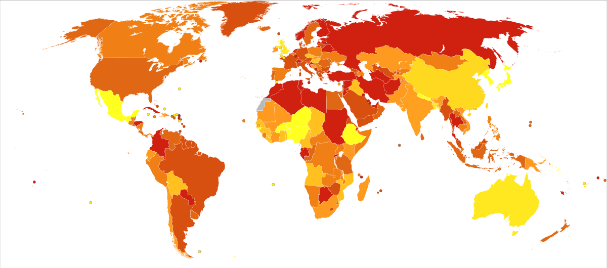

In einer internationalen Vergleichsstudie von 2011 wurde die Häufigkeit von Depressionen in Ländern mit hohem Einkommen verglichen mit der in Ländern mit mittlerem und niedrigem Einkommen. Die Lebenszeitprävalenz betrug in der ersten Gruppe (zehn Länder) 14,9 % und in der zweiten Gruppe (acht Länder) 11,1 %. Das Verhältnis von Frauen zu Männern war ungefähr 2:1.[1] Eine Metaanalyse von 26 Studien mit Daten von 60.000 Kindern der Jahrgänge 1965–1996 ergab für die Altersgruppe unter 13 eine Prävalenz von 2,8 % und für die Altersgruppe 13–18 eine von 5,6 % (Mädchen 5,9 %, Jungen 4,6 %).[2] Die Krankheitslast durch Depressionen, etwa in Form von Arbeitsunfähigkeiten, stationären Behandlungen und Frühverrentungen, ist in Deutschland in den letzten Jahren stark angestiegen.[3][4][5] Es wird angenommen, dass sich die tatsächliche Krankheitshäufigkeit deutlich weniger gravierend verändert hat und das vermehrte Auftreten durch eine bessere Erkennung und weniger Stigmatisierung von Menschen mit psychischen Störungen herrührt.[6] Auch die mit der Zeit niedrigschwelliger gewordenen Diagnose-Kriterien für eine psychische Störung werden als Teilursache kritisch diskutiert.[7] Ergebnisse von Langzeitstudien auf der anderen Seite sprechen jedoch eher für einen echten Anstieg, der mit verschiedenen gesellschaftlichen Einflussfaktoren in Zusammenhang gebracht wird.[8][9][10] Auch in Deutschland scheinen nach Krankenkassendaten jüngere Generationen gefährdeter zu sein, im Laufe ihres Lebens an einer psychischen Störung zu leiden.[11] Die durchschnittliche Arbeitsunfähigkeitsdauer der versicherten Erkrankten belief sich im Jahr 2014 laut Angaben der Techniker Krankenkasse auf 64 Tage (im Vergleich: bei allen Diagnosen durchschnittlich 13 Tage). Von den zehn Gruppen mit den höchsten Erkrankungsraten gehören sieben dem Berufsbereich Gesundheit, Soziales, Lehre und Erziehung an. Mit Abstand führen Mitarbeiter in Callcentern die Liste an; gefolgt von Alten- und Krankenpflegern, Erziehern und Kinderbetreuern, Mitarbeitern der öffentlichen Verwaltung und Beschäftigten im Bewachungsgewerbe. Vergleichsweise wenig anfällig sind Hochschullehrer, Software-Entwickler und Ärzte. Frauen sind fast doppelt so oft betroffen wie Männer. Von 2000 bis 2013 hat sich die Zahl der verordneten Tagesdosen von Antidepressiva fast verdreifacht. In regionaler Hinsicht führen Hamburg (1,4 Arbeitsunfähigkeitstage pro versichertem Arbeitnehmer), Schleswig-Holstein und Berlin (je 1,3 Tage) die Liste an. In Hamburg sind 9,2 Prozent der gesamten Arbeitsunfähigkeitstage durch Depression bedingt. In Süd- und Ostdeutschland sind die Raten im Durchschnitt geringer.[12] Bei Studierenden, die bisher als relativ gesunde Gruppe galten, sind inzwischen nach Angaben der Barmer GEK 17 Prozent (etwa 470.000 Menschen), vor allem ältere, von einer psychiatrischen
